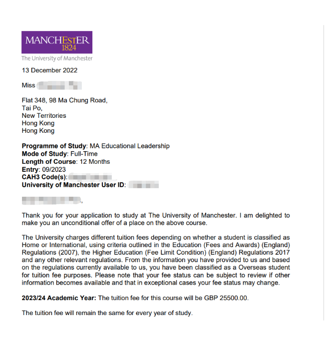
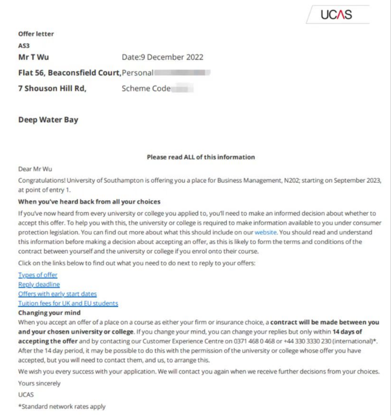

【英美保录留学 - 本科/研究生】
我们团队长期花重金维护跟英美大学招生人员的关系，如果申请者高中或本科的GPA不理想或雅思托福成绩不理想，可以通过内部操作优化录取流程，顺利拿到录取通知书。
帮学生成功申请英国或美国排名前50的大学，这些大学在教育部官网都能查到，绝非野鸡大学。
100%英美正规大学学历，学校花名册中国承认，教育部备案，可认证，落户北上广，考公务员等都可以。
通过我们申请拿到的录取通知书是无条件的（unconditional offer），很多留学中介只能拿到有条件的（conditional offer）来忽悠家长，到时候还要上语言学校和补交各种材料，非常麻烦。而且我们的收费比留学中介至少低20%。
申请费用30万元起，上不封顶，取决于学生的综合条件和目标大学的排名。申请费用不含学费和生活费，学费和生活费是学生出去读书无论如何都要自己负担的，所以不计入申请费用。
联系方式：微信 15726621 邮件 15726621@qq.com
---------- real offer ----------
曼彻斯特大学（University of Manchester），世界排名第27

南安普顿大学（University of Southampton），世界排名第78
